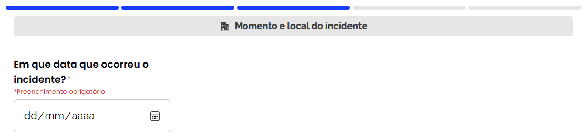
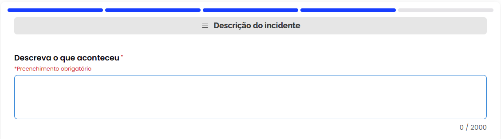
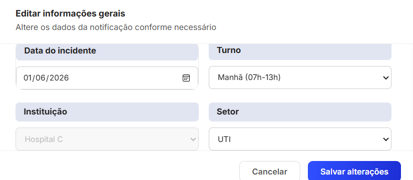
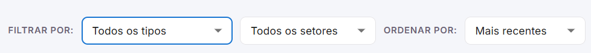
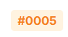
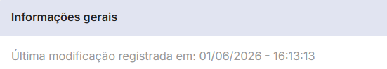

Relatório de Testes Não-Funcionais
Mantenedores: Pedro Silva Soledade
Histórico de Alterações
| Versão | Data | Justificativa | Responsável |
|---|---|---|---|
| 1.0 | 21/05/2026 | Criação e estruturação do documento. | Pedro Silva Soledade |
| 2.0 | 01/06/2026 | Reestruturação do documento; adição de conteúdo nas seções de segurança e acessibilidade. | Pedro Silva Soledade |
| 2.1 | 25/09/2026 | Migração do documento (Google Docs) para o MkDocs. | Sophya Ribeiro |
Sumário¶
1. Introdução¶
Este documento apresenta os resultados da avaliação técnica realizada no sistema NotificaSaúde. O diagnóstico foi conduzido com duas ferramentas de referência no mercado, o OWASP ZAP (Zed Attack Proxy) e o Lighthouse, analisando a aplicação web nos pilares de segurança e acessibilidade.
1.1 Objetivo¶
Apresentar o diagnóstico técnico do NotificaSaúde, fornecendo um parecer detalhado que fundamente a tomada de decisão, a priorização de correções e a evolução contínua da qualidade da aplicação.
1.2 Visão geral do documento¶
O relatório está organizado em seções que refletem as dimensões testadas. Cada seção detalha os achados técnicos obtidos por meio de varreduras automatizadas, classificando-os por nível de severidade ou impacto, com as evidências e recomendações necessárias para a correção.
| Seção | Ferramenta | Conteúdo |
|---|---|---|
| 2. Testes de Segurança | OWASP ZAP | Falhas de configuração e vulnerabilidades da aplicação web, alinhadas às boas práticas de proteção de dados. |
| 3. Testes de Acessibilidade | Lighthouse | Conformidade da interface com as diretrizes e padrões de inclusão digital, garantindo o acesso democrático à plataforma. |
2. Testes de Segurança¶
Esta seção detalha as vulnerabilidades e inconformidades identificadas na varredura automatizada com o OWASP ZAP, divididas entre frontend e backend.
2.1 Frontend¶
URL alvo: https://nes-server.equipe4.front.facom.ufms.br
Resumo dos achados
| Severidade | Quantidade | Alertas |
|---|---|---|
| Média | 3 | Content Security Policy (CSP) Not Set, Missing Anti-clickjacking Header, CORS Misconfiguration |
| Baixa | 2 | Strict-Transport-Security Not Set, X-Content-Type-Options Missing |
| Informativa | 2 | Modern Web Application (SPA), Re-examine Cache-control Directives |
Severidade média¶
Content Security Policy (CSP) Header Not Set
- Endpoint:
GET / - Problema: ausência do cabeçalho
Content-Security-Policy. - Impacto/risco: deixa a aplicação vulnerável a ataques de Cross-Site Scripting (XSS) e à injeção de conteúdo malicioso, pois o navegador não tem restrições sobre a origem dos scripts executados.
Missing Anti-clickjacking Header
- Problema: ausência das diretivas
X-Frame-Optionsouframe-ancestorsno CSP. - Impacto/risco: permite que a aplicação seja renderizada dentro de um
<iframe>em sites de terceiros, tornando-a vulnerável a ataques de clickjacking (em que o usuário é induzido a clicar em algo invisível).
Configuração incorreta entre domínios (CORS Misconfiguration)
- Problema: política de CORS (Cross-Origin Resource Sharing) potencialmente permissiva.
- Impacto/risco: pode permitir que domínios maliciosos façam requisições ao frontend e acessem dados restritos que deveriam estar isolados.
Severidade baixa¶
| Alerta | Descrição |
|---|---|
| Strict-Transport-Security Header Not Set | Ausência do cabeçalho HSTS. Sem ele, a aplicação permite conexões iniciais inseguras via HTTP antes de redirecionar para HTTPS, abrindo brecha para ataques man-in-the-middle. |
| X-Content-Type-Options Header Missing | Ausência do cabeçalho X-Content-Type-Options: nosniff. O navegador pode tentar adivinhar o tipo do arquivo (MIME sniffing), permitindo a execução de arquivos maliciosos mascarados como texto ou imagem. |
Severidade informativa¶
| Alerta | Descrição |
|---|---|
| Modern Web Application | Detectada aplicação do tipo SPA (Single Page Application). Recomenda-se ajustar as regras de varredura para garantir a cobertura completa das rotas dinâmicas. |
| Re-examine Cache-control Directives | As diretivas de controle de cache devem ser revisadas para garantir que páginas com dados sensíveis não fiquem armazenadas de forma insegura no cache local do navegador. |
2.2 Backend¶
URL alvo: https://nes-server.equipe4.back.facom.ufms.br
Resumo dos achados
| Severidade | Quantidade | Alertas |
|---|---|---|
| Média | 1 | Configuração incorreta entre domínios (CORS Misconfiguration) |
| Baixa | 7 | Cookie Without Secure Flag, Cookie without SameSite Attribute, Strict-Transport-Security Not Set, X-Content-Type-Options Missing, Server Leaks Version, Divulgação de Data/Hora Unix, Private IP Disclosure |
| Informativa | 2 | Session Management Response Identified, Re-examine Cache-control Directives |
Severidade média¶
Configuração incorreta entre domínios (CORS Misconfiguration)
- Problema: configuração de CORS considerada insegura, permitindo origens (origins) muito amplas ou curingas (
*). - Impacto/risco: permite que scripts de outros sites interajam diretamente com a API do backend, potencialmente expondo dados de sessão ou dados sensíveis de usuários a requisições não autorizadas.
Severidade baixa¶
| Alerta | Descrição |
|---|---|
| Cookie Without Secure Flag | Cookies de sessão ou da aplicação são enviados sem o atributo Secure e podem ser transmitidos em canais HTTP não criptografados, facilitando a interceptação do tráfego. |
| Cookie without SameSite Attribute | Cookies sem o atributo SameSite definido aumentam o risco de ataques CSRF (Cross-Site Request Forgery), em que um site terceiro força o navegador a enviar cookies legítimos. |
| Strict-Transport-Security Header Not Set | HSTS ausente no backend, permitindo tentativas de conexão inicial sem criptografia forçada. |
| X-Content-Type-Options Header Missing | Falta da diretiva nosniff, permitindo riscos associados a MIME sniffing nas respostas da API. |
| Server Leaks Version Information via "Server" Header | O cabeçalho HTTP Server expõe a versão e a tecnologia usadas no backend, facilitando a busca de exploits públicos para vulnerabilidades conhecidas daquela versão. |
| Divulgação de data e hora (Unix) | As respostas da API expõem timestamps Unix internos, fornecendo informações sobre a sincronização e a lógica interna do servidor. |
| Private IP Disclosure | Vazamento de endereços IP privados nos cabeçalhos ou no corpo das respostas HTTP, revelando detalhes da rede interna da instituição (FACOM/UFMS). |
Severidade informativa¶
| Alerta | Descrição |
|---|---|
| Session Management Response Identified | Identificado endpoint relacionado ao gerenciamento de sessões de usuário. Recomenda-se uma auditoria manual complementar para validar a robustez da expiração e da renovação de tokens. |
| Re-examine Cache-control Directives | Os cabeçalhos de cache da API precisam ser validados para evitar o armazenamento de dados dinâmicos ou sensíveis em proxies ou gateways intermediários. |
3. Testes de Acessibilidade¶
Esta seção apresenta os resultados da avaliação de acessibilidade digital do frontend do NotificaSaúde, feita com o Lighthouse. Os testes foram baseados nas diretrizes internacionais WCAG (Web Content Accessibility Guidelines), identificando barreiras que comprometem a experiência de pessoas que dependem de tecnologias assistivas (como leitores de tela) ou que têm limitações visuais.
Resumo de impacto
| Criticidade | Tipo de falha | Impacto |
|---|---|---|
| Alta | Ausência de rótulos (<label>) em formulários |
Bloqueia a compreensão por leitores de tela. |
| Alta | Campos ARIA sem nome acessível | Identificação genérica ou confusa em leitores de tela. |
| Média | Contraste de cor insuficiente | Dificulta ou impede a leitura de textos na tela. |
3.1 Criticidade alta¶
Ausência de rótulos (<label>) associados a elementos de formulário
- Problema: elementos de entrada de dados (
<input>,<textarea>e<select>) não têm tags<label>explicitamente vinculadas a eles por meio dos atributosid/for. - Impacto: tecnologias assistivas, como leitores de tela, não conseguem anunciar o propósito do campo para pessoas com deficiência visual, tornando o preenchimento do formulário confuso ou impossível.
Evidências encontradas


Campos Data, Turno, Unidade, Setor, Idade e Sexo.

Elementos afetados: <input data-testid="field-data-incidente"> e os elementos <select> com as tags de teste field-turno, field-unidade, field-setor, field-idade e field-sexo.
Campos de entrada ARIA sem nomes acessíveis
- Problema: componentes customizados que usam a semântica ARIA (
role="combobox") não têm um rótulo de texto descritivo legível por leitores de tela. - Impacto: o leitor de tela anuncia o componente apenas como um elemento genérico de seleção (ex.: "caixa de combinação"), sem informar o que está sendo selecionado.
Evidências encontradas (componentes de filtro e seleção)

| Filtro | Código |
|---|---|
| "Todos os tipos" | <div role="combobox" class="MuiSelect-select ..."> |
| "Todos os setores" | <div role="combobox" class="MuiSelect-select ..."> |
| "Mais recentes" | <div role="combobox" class="MuiSelect-select ..."> |
3.2 Criticidade média¶
Taxa de contraste de cor insuficiente para texto
- Problema: a relação de contraste entre a cor do texto e a cor do fundo está abaixo do mínimo exigido pela WCAG (4,5:1 para texto normal).
- Impacto: pessoas com baixa visão, daltonismo ou que usam telas sob luz solar direta têm sérias dificuldades para ler as informações, o que gera fadiga visual e perda de contexto.
Evidências encontradas
| Elemento | Evidência | Classe |
|---|---|---|
| Identificadores de registros (IDs) |  |
_id_12ilk_43 |
| Metadados de data e hora |  |
_metaText_1smv7_180 |